Kits créatifs
En collaboration avec ma responsable de stage, j’ai contribué à la réalisation de son idée en prenant entièrement en charge la création du packaging et de tous les supports imprimés du kit, de A à Z, afin de proposer une expérience complète aux utilisateurs.
Les kits permettent de fabriquer son propre bijou à la maison, avec tout le matériel nécessaire pour travailler la cire de bijoutier.
Trois kits sont proposés :
- Kit complet pour bagues : pour concevoir et sculpter vos propres bagues.
- Kit médaille empreinte : pour créer des médailles personnalisées avec empreintes uniques.
- Kit chevalière : pour réaliser une chevalière avec gravure ou empreinte.
Le processus est simple : le client reçoit la boîte complète, façonne son bijou, puis nous renvoie la pièce terminée. Nous nous occupons ensuite de l’envoyer chez le fondeur, de réaliser le polissage et la dorure, puis de renvoyer le bijou fini.
Le client peut également choisir le matériau de fonte (laiton, argent ou or) et la finition (dorée, argentée ou argentée vieillie) pour un bijou totalement personnalisé.
Logiciels utilisés
-
Kit bague complet
Pour réaliser une bague de A à Z totalement personnalisée.
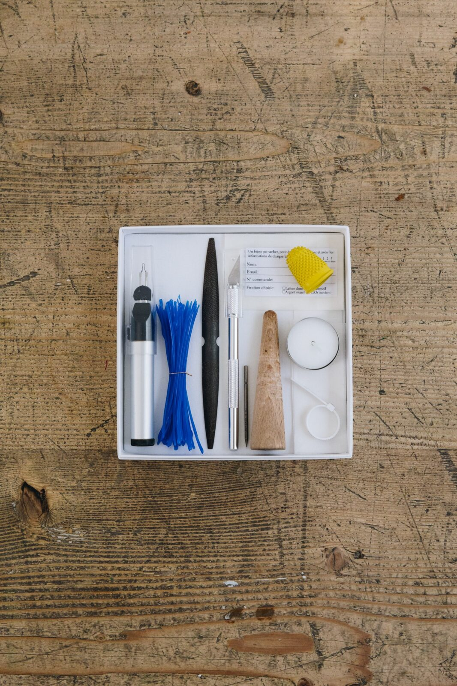
-
Kit médaille empreinte
Pour créer une médaille personnalisée avec une empreinte unique.
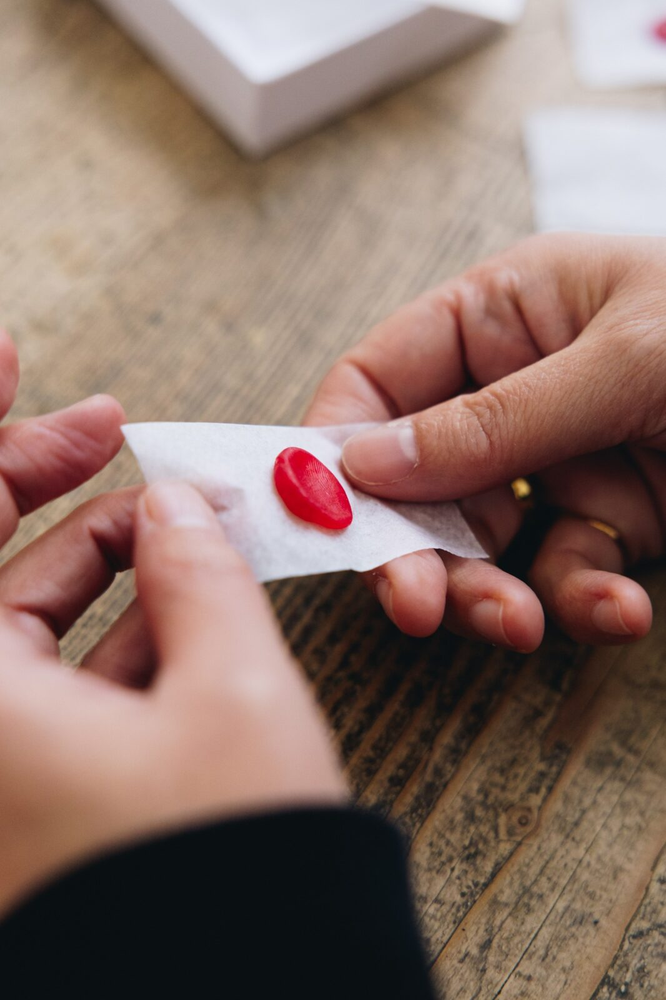
-
Kit chevalière
(gravure ou empreinte)Pour réaliser une chevalière avec gravure ou empreinte.
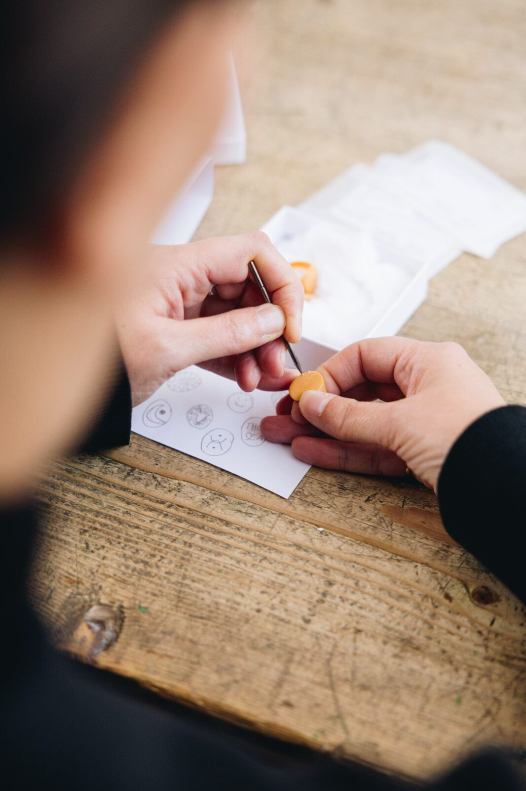
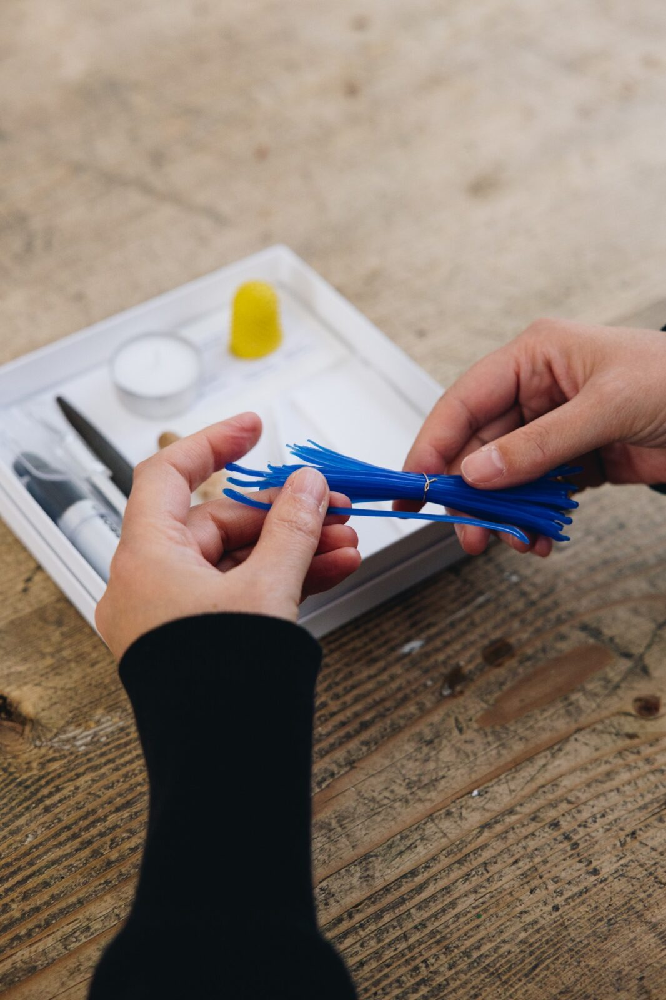
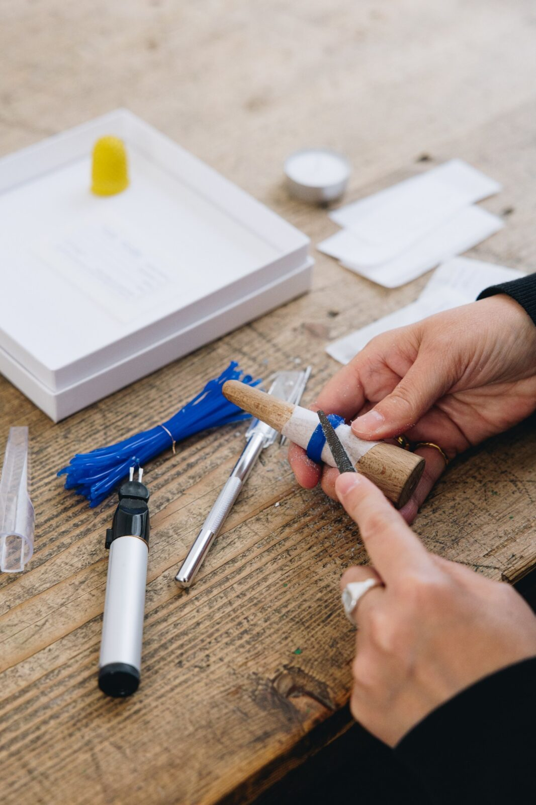
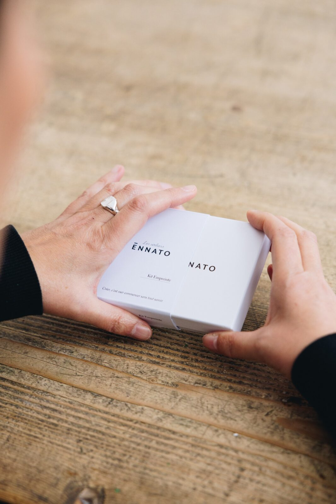
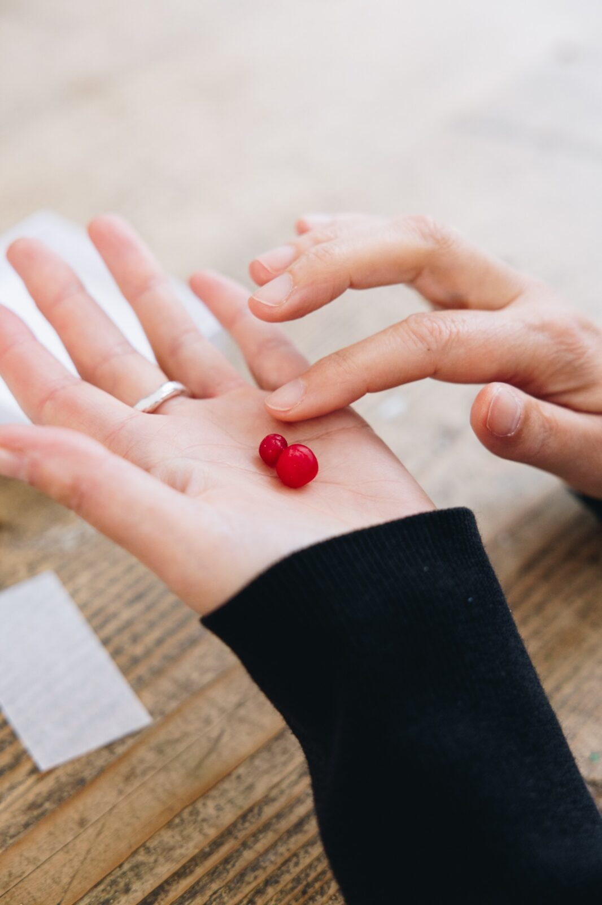
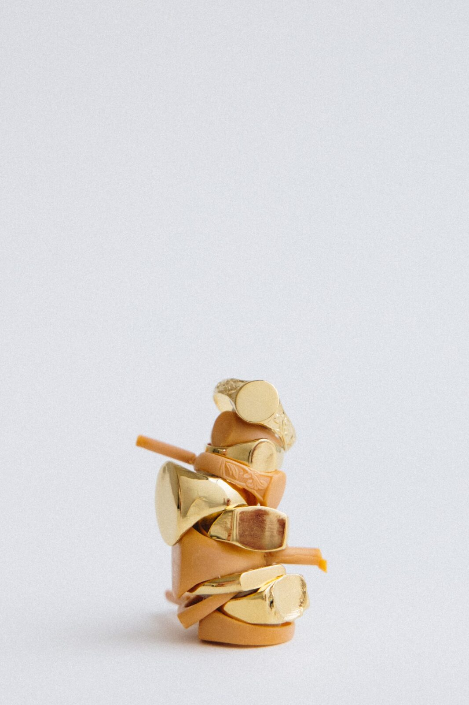
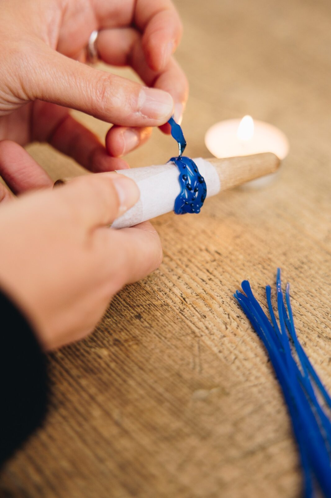
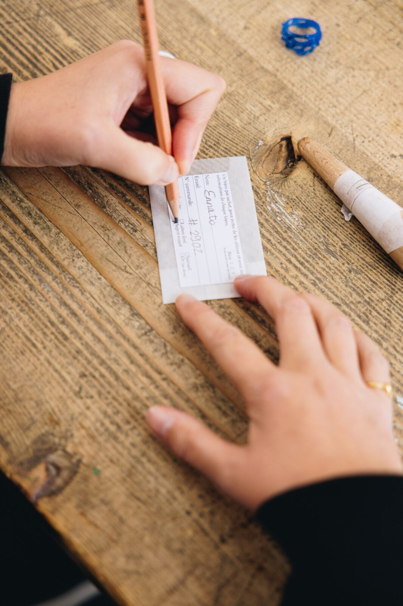
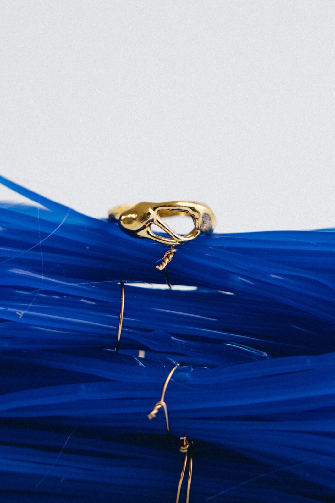
Création digital
-
Fourreaux
Éléments qui entourent et protègent la boîte du kit, apportant une identité visuelle soignée.
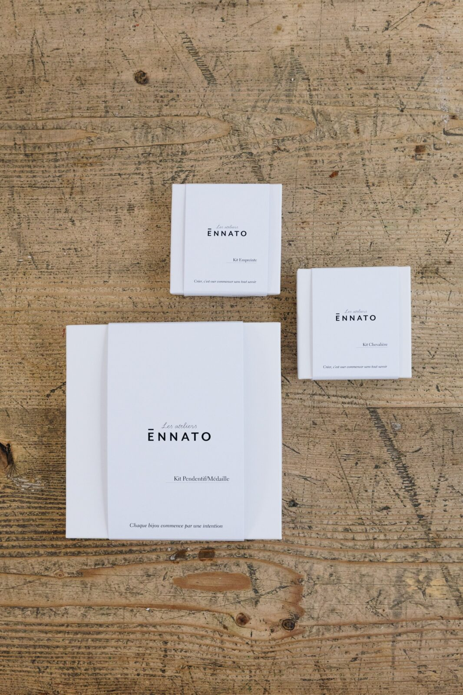
-
Journal/catalogue
Petit catalogue inclus dans le kit, détaillant toutes les étapes et explications pour créer le bijou.
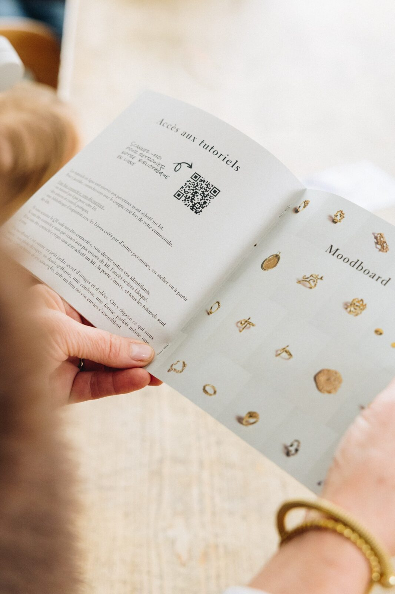
-
Cartes postales
Cartes individuelles fournissant des instructions claires et illustrées pour accompagner chaque étape de fabrication.
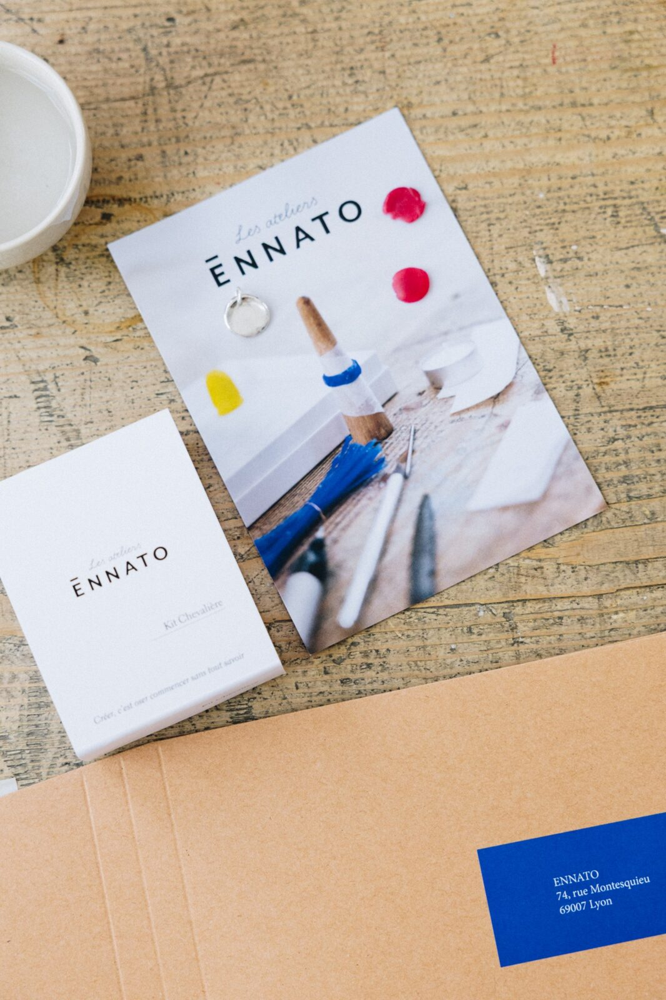
Contenu vidéo
Réseaux sociaux
J’ai également conçu et réalisé du contenu destiné aux réseaux sociaux, incluant des visuels promotionnels pour les kits, des photos et des illustrations explicatives, ainsi que des publications visant à présenter le processus et l’expérience utilisateur de manière attractive et cohérente avec l’identité de la marque.
Tutos
J’ai également créé des tutoriels vidéo, disponibles uniquement pour les personnes ayant acheté un kit. Ces vidéos expliquent chaque étape de la création des bijoux, et j’ai pris en charge le tournage, le montage et la mise en forme pédagogique afin de rendre le processus clair et accessible aux utilisateurs.
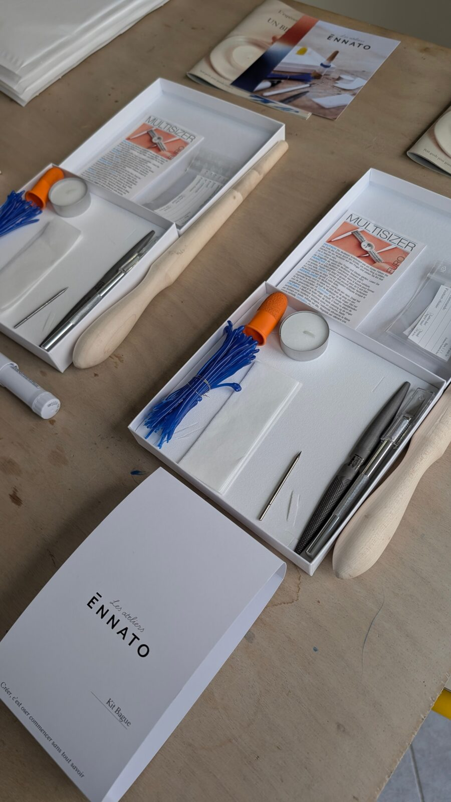